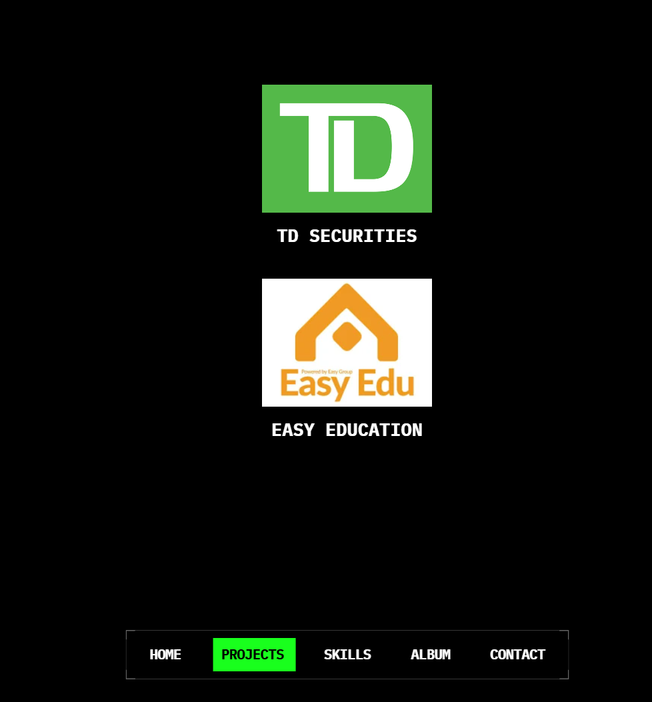

Work
-

TD Securities
Analyst III (Data Engineer) · 2022 – Present
Led system migrations and developed automation pipelines to modernize legacy workflows, improve operational efficiency, and reduce manual effort across Global Operations.
View Detail -
Easy Education
Data Engineer · 2020 – 2022
Built an automated question-routing pipeline that processed student-submitted questions, classified them by subject, and matched students with qualified instructors for personalized support.
View Detail